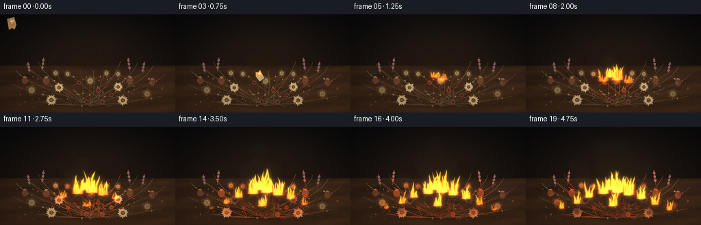
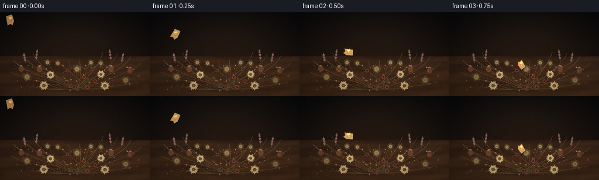
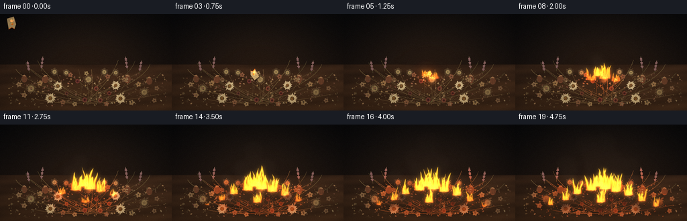
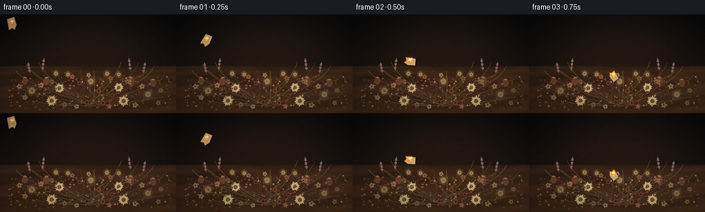

CODING AGENTS AS PIXEL WORLD MODELS
traex/DeepSeek-V4.1-Flash · material_0028
点击播放 · 原生 RGB 像素
逐轮保存的候选
回放视频、检查图与代码变化。
每份候选均可单独播放。实际图片检查记录在下方工具轨迹中。
候选 01播放与检查图
点击播放 · 原生 RGB 像素


展开代码变化
--- 上一保存版本
+++ 本次保存版本
@@ -0,0 +1,724 @@
+"""Procedural 20-frame film: burning paper falling into a pile of dried flowers."""
+
+from __future__ import annotations
+
+import math
+import random
+from pathlib import Path
+
+import cv2
+import numpy as np
+from PIL import Image, ImageDraw, ImageFilter
+
+import artifact_io
+
+
+W, H = 256, 144
+SS = 1
+RW, RH = W * 4, H * 4
+FPS = 4
+FRAMES = 20
+TAU = math.tau
+
+
+def clamp(value, lo=0.0, hi=1.0):
+ return max(lo, min(hi, value))
+
+
+def smoothstep(a, b, x):
+ t = np.clip((x - a) / max(1e-6, b - a), 0.0, 1.0)
+ return t * t * (3.0 - 2.0 * t)
+
+
+def rgba(color, alpha=255):
+ if len(color) == 4:
+ return color
+ return (*color, alpha)
+
+
+def mix(a, b, t):
+ return tuple(int(round(a[i] * (1 - t) + b[i] * t)) for i in range(3))
+
+
+def bezier_points(p0, p1, p2, count=36):
+ points = []
+ for i in range(count):
+ t = i / (count - 1)
+ u = 1.0 - t
+ points.append(
+ (
+ u * u * p0[0] + 2 * u * t * p1[0] + t * t * p2[0],
+ u * u * p0[1] + 2 * u * t * p1[1] + t * t * p2[1],
+ )
+ )
+ return points
+
+
+def rotated_points(cx, cy, points, angle):
+ ca, sa = math.cos(angle), math.sin(angle)
+ return [(cx + x * ca - y * sa, cy + x * sa + y * ca) for x, y in points]
+
+
+def petal_points(length, width, curl=0.0):
+ pts = []
+ for i in range(13):
+ t = i / 12
+ x = width * math.sin(math.pi * t) * (1.0 - 0.25 * t)
+ y = length * t + curl * math.sin(math.pi * t) * width
+ pts.append((x, y))
+ for i in range(12, -1, -1):
+ t = i / 12
+ x = -width * math.sin(math.pi * t) * (1.0 - 0.25 * t)
+ y = length * t + curl * math.sin(math.pi * t) * width
+ pts.append((x, y))
+ return pts
+
+
+def radial_glow(array, cx, cy, radius, color, strength, power=2.2):
+ x0 = max(0, int(cx - radius))
+ x1 = min(array.shape[1], int(cx + radius + 1))
+ y0 = max(0, int(cy - radius))
+ y1 = min(array.shape[0], int(cy + radius + 1))
+ if x1 <= x0 or y1 <= y0:
+ return
+ yy, xx = np.mgrid[y0:y1, x0:x1]
+ dist = np.sqrt((xx - cx) ** 2 + (yy - cy) ** 2) / radius
+ falloff = np.clip(1.0 - dist, 0.0, 1.0) ** power
+ tint = np.asarray(color, dtype=np.float32)
+ array[y0:y1, x0:x1] += falloff[..., None] * tint[None, None, :] * strength
+
+
+def draw_stem(draw, p0, p1, p2, color, width, highlight=None):
+ points = bezier_points(p0, p1, p2, 42)
+ draw.line(points, fill=rgba(color), width=width, joint="curve")
+ if highlight and width >= 3:
+ points2 = [(x + 1.2, y - 0.7) for x, y in points]
+ draw.line(points2, fill=rgba(highlight, 95), width=max(1, width // 3), joint="curve")
+
+
+def draw_petal(draw, cx, cy, angle, length, width, color, outline=None, curl=0.0):
+ pts = rotated_points(cx, cy, petal_points(length, width, curl), angle)
+ draw.polygon(pts, fill=rgba(color))
+ if outline:
+ draw.line(pts + [pts[0]], fill=rgba(outline), width=1)
+ vein = rotated_points(cx, cy, [(0, 1), (0, length * 0.92)], angle)
+ draw.line(vein, fill=rgba(mix(color, (255, 244, 210), 0.28), 120), width=1)
+
+
+def draw_daisy(draw, cx, cy, radius, angle, petal_color, center_color, petals=13, alpha=255):
+ for i in range(petals):
+ a = angle + i * TAU / petals
+ rr = radius * (0.91 + 0.09 * math.sin(i * 2.7))
+ color = mix(petal_color, (241, 218, 166), 0.12 * (i % 3))
+ draw_petal(
+ draw,
+ cx + math.cos(a) * radius * 0.16,
+ cy + math.sin(a) * radius * 0.16,
+ a + math.pi / 2,
+ rr,
+ radius * 0.20,
+ (*color, alpha),
+ outline=mix(color, (92, 61, 39), 0.36),
+ curl=0.18 if i % 2 else -0.11,
+ )
+ draw.ellipse(
+ (cx - radius * 0.27, cy - radius * 0.27, cx + radius * 0.27, cy + radius * 0.27),
+ fill=rgba(center_color),
+ outline=rgba(mix(center_color, (30, 20, 14), 0.55)),
+ width=2,
+ )
+ for i in range(16):
+ a = i * TAU / 16 + 0.3
+ rr = radius * (0.09 + 0.14 * ((i * 7) % 5) / 4)
+ draw.ellipse(
+ (cx + math.cos(a) * rr - 2, cy + math.sin(a) * rr - 2,
+ cx + math.cos(a) * rr + 2, cy + math.sin(a) * rr + 2),
+ fill=rgba(mix(center_color, (224, 154, 65), 0.35)),
+ )
+
+
+def draw_rose(draw, cx, cy, radius, angle, outer, inner):
+ for layer, scale in enumerate((1.0, 0.76, 0.54, 0.34)):
+ count = 9 - layer
+ for i in range(count):
+ a = angle + i * TAU / count + layer * 0.35
+ rr = radius * scale * 0.63
+ color = mix(outer, inner, 0.12 * layer + 0.05 * math.sin(i * 2.1))
+ draw_petal(
+ draw,
+ cx + math.cos(a) * radius * scale * 0.24,
+ cy + math.sin(a) * radius * scale * 0.24,
+ a + math.pi / 2,
+ rr,
+ radius * scale * (0.31 if layer else 0.37),
+ (*color, 255),
+ outline=mix(color, (61, 28, 20), 0.48),
+ curl=0.16 if i % 2 else -0.09,
+ )
+ draw.ellipse(
+ (cx - radius * 0.15, cy - radius * 0.13, cx + radius * 0.15, cy + radius * 0.16),
+ fill=rgba(mix(inner, (50, 21, 16), 0.4)),
+ )
+
+
+def draw_poppy(draw, cx, cy, radius, angle, color):
+ draw.ellipse(
+ (cx - radius * 0.62, cy - radius * 0.72, cx + radius * 0.62, cy + radius * 0.72),
+ fill=rgba(color),
+ outline=rgba(mix(color, (54, 37, 24), 0.55)),
+ width=2,
+ )
+ for i in range(7):
+ x = cx - radius * 0.44 + i * radius * 0.145
+ draw.line(
+ (x, cy - radius * 0.55, x + radius * 0.03, cy + radius * 0.53),
+ fill=rgba(mix(color, (66, 43, 28), 0.42), 135),
+ width=2,
+ )
+ cap = rotated_points(
+ cx,
+ cy - radius * 0.66,
+ [(-radius * 0.42, 0), (0, -radius * 0.22), (radius * 0.42, 0),
+ (radius * 0.2, radius * 0.14), (0, radius * 0.04), (-radius * 0.2, radius * 0.14)],
+ angle,
+ )
+ draw.polygon(cap, fill=rgba(mix(color, (223, 190, 127), 0.35)))
+
+
+def draw_seed_head(draw, cx, cy, radius, angle, color):
+ for i in range(20):
+ a = angle + i * TAU / 20
+ r0 = radius * 0.72
+ r1 = radius * (1.0 + 0.11 * math.sin(i * 1.9))
+ draw.line(
+ (cx + math.cos(a) * r0, cy + math.sin(a) * r0,
+ cx + math.cos(a) * r1, cy + math.sin(a) * r1),
+ fill=rgba(mix(color, (235, 203, 143), 0.35), 190),
+ width=2,
+ )
+ draw.ellipse(
+ (cx - radius * 0.67, cy - radius * 0.67, cx + radius * 0.67, cy + radius * 0.67),
+ fill=rgba(color),
+ outline=rgba(mix(color, (45, 28, 20), 0.6)),
+ width=2,
+ )
+ for i in range(10):
+ a = i * TAU / 10 + angle
+ draw.ellipse(
+ (cx + math.cos(a) * radius * 0.38 - 2, cy + math.sin(a) * radius * 0.38 - 2,
+ cx + math.cos(a) * radius * 0.38 + 2, cy + math.sin(a) * radius * 0.38 + 2),
+ fill=rgba(mix(color, (232, 191, 119), 0.44)),
+ )
+
+
+def draw_lavender(draw, cx, cy, height, angle, color):
+ dx, dy = math.sin(angle) * height, -math.cos(angle) * height
+ draw.line((cx, cy, cx + dx, cy + dy), fill=rgba((78, 69, 42)), width=3)
+ for i in range(9):
+ t = 0.25 + i * 0.085
+ x, y = cx + dx * t, cy + dy * t
+ spread = 5 + 4 * math.sin(i * 2.2)
+ draw.ellipse((x - spread, y - 4, x + spread, y + 4),
+ fill=rgba(mix(color, (204, 164, 132), 0.1 * (i % 3))))
+
+
+def draw_grass(draw, p0, p1, p2, color, width):
+ points = bezier_points(p0, p1, p2, 30)
+ draw.line(points, fill=rgba(color), width=width, joint="curve")
+ for i in range(7, 27, 3):
+ x, y = points[i]
+ side = 1 if i % 2 else -1
+ draw.line((x, y, x + side * 10, y - 6 - i * 0.2), fill=rgba(color, 180), width=1)
+
+
+def build_flower_layer():
+ layer = Image.new("RGBA", (RW, RH), (0, 0, 0, 0))
+ draw = ImageDraw.Draw(layer)
+ rng = random.Random(284731)
+ s = SS
+
+ # Long, tangled stems give the pile structure before the flower heads are added.
+ base_points = [(470, 520), (520, 535), (575, 525), (420, 530), (620, 535)]
+ targets = [
+ (125, 365), (185, 330), (250, 354), (320, 327), (390, 344),
+ (468, 328), (545, 330), (620, 340), (700, 325), (770, 350),
+ (850, 335), (915, 382), (160, 445), (260, 470), (355, 420),
+ (440, 452), (520, 418), (600, 455), (685, 425), (785, 470),
+ (880, 440), (945, 480), (215, 510), (330, 530), (705, 520),
+ (810, 515),
+ ]
+ for i, target in enumerate(targets):
+ base = base_points[i % len(base_points)]
+ bend = ((base[0] + target[0]) * 0.5 + rng.uniform(-48, 48),
+ (base[1] + target[1]) * 0.5 + rng.uniform(-30, 42))
+ shade = mix((76, 56, 34), (119, 86, 49), rng.random() * 0.55)
+ draw_stem(draw, (base[0] * s, base[1] * s), (bend[0] * s, bend[1] * s),
+ (target[0] * s, target[1] * s), shade, rng.choice((2, 3, 3, 4)),
+ highlight=(155, 118, 70))
+
+ # A few fine grasses break the silhouette.
+ for tip, bend in [
+ ((95, 330), (135, 405)), ((150, 290), (205, 392)), ((225, 278), (270, 390)),
+ ((705, 275), (670, 385)), ((805, 280), (775, 380)), ((895, 300), (855, 405)),
+ ((960, 350), (910, 430)), ((75, 410), (155, 465)),
+ ]:
+ draw_grass(draw, (520 * s, 525 * s), (bend[0] * s, bend[1] * s),
+ (tip[0] * s, tip[1] * s), mix((133, 109, 65), (93, 82, 49), rng.random()), 2)
+
+ # Back row, deliberately smaller and muted.
+ for x, y, h, a in [(175, 352, 74, -0.16), (245, 340, 88, 0.12),
+ (760, 342, 90, -0.13), (830, 354, 78, 0.18)]:
+ draw_lavender(draw, x * s, y * s, h * s, a, (133, 94, 93))
+ for x, y, r, a in [(325, 345, 22, 0.4), (395, 350, 20, -0.7),
+ (622, 346, 22, 0.3), (690, 350, 20, 1.1)]:
+ draw_seed_head(draw, x * s, y * s, r * s, a, (124, 103, 66))
+ for x, y, r, a in [(145, 388, 29, 0.2), (270, 390, 31, -0.3),
+ (760, 390, 32, 0.45), (890, 400, 30, 0.1)]:
+ draw_poppy(draw, x * s, y * s, r * s, a, (129, 75, 48))
+
+ # The large flower heads form a readable central pile.
+ flower_defs = [
+ ("daisy", 345, 430, 38, 0.1, (213, 187, 137), (78, 52, 30)),
+ ("daisy", 690, 426, 37, -0.2, (219, 192, 143), (83, 51, 29)),
+ ("rose", 462, 401, 35, 0.2, (134, 65, 55), (75, 35, 32)),
+ ("rose", 574, 445, 38, -0.3, (149, 78, 56), (80, 38, 31)),
+ ("rose", 397, 474, 31, 0.55, (119, 72, 50), (68, 39, 31)),
+ ("rose", 651, 473, 34, -0.45, (142, 70, 50), (75, 35, 28)),
+ ("seed", 527, 391, 29, 0.1, (137, 111, 70), (64, 44, 28)),
+ ("seed", 185, 445, 30, -0.5, (130, 105, 65), (61, 42, 27)),
+ ("seed", 860, 467, 29, 0.4, (129, 101, 63), (62, 41, 26)),
+ ("daisy", 300, 503, 43, 0.7, (207, 179, 128), (80, 52, 28)),
+ ("daisy", 718, 505, 42, -0.6, (215, 185, 132), (82, 52, 27)),
+ ("rose", 505, 512, 39, 0.1, (127, 65, 51), (70, 34, 28)),
+ ("rose", 598, 515, 37, 0.7, (142, 79, 55), (77, 38, 29)),
+ ]
+ for kind, x, y, r, a, c1, c2 in flower_defs:
+ if kind == "daisy":
+ draw_daisy(draw, x * s, y * s, r * s, a, c1, c2, 14)
+ elif kind == "rose":
+ draw_rose(draw, x * s, y * s, r * s, a, c1, c2)
+ else:
+ draw_seed_head(draw, x * s, y * s, r * s, a, c1)
+
+ # Loose fallen petals, concentrated around the large blooms.
+ for i in range(92):
+ cluster_x = rng.choice((230, 340, 460, 570, 680, 810, 900))
+ x = cluster_x + rng.gauss(0, 85)
+ y = rng.uniform(355, 545)
+ if not (70 < x < 990):
+ continue
+ r = rng.uniform(5, 14)
+ col = mix(rng.choice(((166, 104, 74), (190, 144, 95), (137, 80, 60),
+ (206, 174, 121), (120, 83, 57))),
+ (55, 40, 29), rng.random() * 0.18)
+ draw_petal(draw, x * s, y * s, rng.uniform(0, TAU), r * s, r * 0.34 * s,
+ (*col, rng.randint(185, 245)), outline=mix(col, (68, 45, 30), 0.35),
+ curl=rng.uniform(-0.3, 0.3))
+
+ # Fine dry twigs and seed specks.
+ for i in range(55):
+ x = rng.uniform(80, 975) * s
+ y = rng.uniform(345, 550) * s
+ ln = rng.uniform(7, 25) * s
+ a = rng.uniform(-0.8, 0.8)
+ draw.line((x, y, x + math.cos(a) * ln, y + math.sin(a) * ln),
+ fill=rgba(mix((99, 77, 48), (152, 121, 77), rng.random()), 190),
+ width=rng.choice((1, 1, 2)))
+
+ return layer
+
+
+def build_background():
+ rng = np.random.default_rng(81173)
+ yy, xx = np.mgrid[0:RH, 0:RW]
+ yn = yy / RH
+ top = np.array((13, 12, 11), dtype=np.float32)
+ bottom = np.array((43, 27, 17), dtype=np.float32)
+ arr = top + (bottom - top) * (yn[..., None] ** 1.35)
+ arr += np.array((18, 11, 6), dtype=np.float32) * np.exp(
+ -(((xx - RW * 0.52) / (RW * 0.42)) ** 2 +
+ ((yy - RH * 0.36) / (RH * 0.52)) ** 2)
+ )[..., None]
+ bg = Image.fromarray(np.clip(arr, 0, 255).astype(np.uint8), "RGB")
+ bg = bg.filter(ImageFilter.GaussianBlur(5 * SS))
+ arr = np.asarray(bg).astype(np.float32)
+
+ # Table plane.
+ horizon = int(300 * SS)
+ table = np.zeros((RH - horizon, RW, 3), dtype=np.float32)
+ ty = np.linspace(0.0, 1.0, RH - horizon)[:, None]
+ wood = np.array((83, 52, 29), dtype=np.float32)
+ wood2 = np.array((51, 33, 22), dtype=np.float32)
+ table[:] = wood2 + (wood - wood2) * (0.30 + 0.70 * ty[..., None])
+ table_yy = yy[horizon:]
+ table_xx = xx[horizon:]
+ grain = (
+ 0.52 * np.sin((table_yy - 315 * SS) * 0.055 + np.sin(table_xx * 0.007) * 2.2)
+ + 0.28 * np.sin((table_yy - 330 * SS) * 0.14 + table_xx * 0.0025)
+ + 0.20 * np.sin((table_yy + table_xx * 0.08) * 0.03)
+ )
+ table += grain[..., None] * np.array((11, 7, 4), dtype=np.float32)
+ table *= (0.82 + 0.18 * (table_xx[0] / RW))[None, :, None]
+ arr[horizon:] = table
+ arr[:horizon] *= 0.92
+
+ # Soft vignette and a dark table edge.
+ edge = np.exp(-((yy[horizon:horizon + 9 * SS] - horizon) / (3.5 * SS)) ** 2)
+ arr[horizon:horizon + 9 * SS] *= (1.0 - 0.24 * edge[..., None])
+
+ noise = rng.normal(0, 3.4, (RH, RW, 1)).astype(np.float32)
+ arr += noise
+ return np.clip(arr, 0, 255).astype(np.uint8)
+
+
+def paper_pose(frame):
+ poses = [
+ (70, 53, -0.22, 1.05, 0),
+ (177, 151, 0.48, 1.02, 1),
+ (336, 276, 1.67, 0.95, 2),
+ (492, 362, 2.58, 0.86, 3),
+ (507, 373, 2.85, 0.77, 4),
+ ]
+ if frame < len(poses):
+ return poses[frame]
+ return poses[-1]
+
+
+def draw_paper(base, frame, s=SS):
+ x, y, angle, scale, _ = paper_pose(frame)
+ overlay = Image.new("RGBA", (RW, RH), (0, 0, 0, 0))
+ draw = ImageDraw.Draw(overlay)
+ x *= s
+ y *= s
+ if frame >= 4:
+ scale *= max(0.72, 1.0 - (frame - 4) * 0.05)
+
+ w = 46 * s * scale
+ h = 62 * s * scale
+ curl = 7 * s * scale
+ local = [
+ (-w * 0.48, -h * 0.48),
+ (w * 0.42, -h * 0.54),
+ (w * 0.50, h * 0.20),
+ (w * 0.18, h * 0.48 + curl),
+ (-w * 0.12, h * 0.40),
+ (-w * 0.55, h * 0.50),
+ ]
+ shadow_pts = rotated_points(x + 5 * s, y + 7 * s, local, angle)
+ draw.polygon(shadow_pts, fill=(18, 9, 5, 95))
+ pts = rotated_points(x, y, local, angle)
+ paper_col = (201, 168, 112) if frame < 4 else (96, 67, 42)
+ draw.polygon(pts, fill=(*paper_col, 255), outline=(82, 52, 28, 255))
+ draw.line(pts + [pts[0]], fill=(62, 38, 23, 255), width=max(1, s))
+
+ # Curl and fibers.
+ c0 = rotated_points(x, y, [(-w * 0.28, -h * 0.31), (w * 0.12, h * 0.20)], angle)
+ c1 = rotated_points(x, y, [(-w * 0.10, -h * 0.48), (w * 0.30, h * 0.02)], angle)
+ draw.line(c0, fill=(111, 75, 44, 190), width=max(1, s // 2))
+ draw.line(c1, fill=(235, 205, 151, 140), width=max(1, s // 3))
+
+ # A glowing, consumed lower edge and a small burn hole.
+ burn_edge = rotated_points(x, y, [
+ (w * 0.18, h * 0.48 + curl), (-w * 0.12, h * 0.40), (-w * 0.55, h * 0.50),
+ ], angle)
+ draw.line(burn_edge, fill=(255, 105, 17, 245), width=3 * s)
+ hole = rotated_points(x, y, [
+ (-w * 0.05, h * 0.02), (w * 0.12, -h * 0.02), (w * 0.19, h * 0.12),
+ (w * 0.05, h * 0.20), (-w * 0.10, h * 0.13),
+ ], angle)
+ draw.polygon(hole, fill=(255, 120, 23, 255))
+ draw.ellipse((x - 4 * s, y - 3 * s, x + 4 * s, y + 4 * s), fill=(255, 223, 108, 230))
+ return overlay
+
+
+def add_tongue(field, x0, y0, height, width, phase, strength=1.0):
+ lean = height * 0.22 * math.sin(phase * 0.73)
+ bx = int(max(0, x0 - height * 0.45))
+ ex = int(min(RW, x0 + height * 0.45 + width * 3))
+ by = int(max(0, y0 - height - 10 * SS))
+ ey = int(min(RH, y0 + 9 * SS))
+ if ex <= bx or ey <= by:
+ return
+ yy, xx = np.mgrid[by:ey, bx:ex].astype(np.float32)
+ u = (y0 - yy) / height
+ valid = (u >= 0) & (u <= 1)
+ uu = np.clip(u, 0, 1)
+ center = (
+ x0
+ + lean * uu ** 1.7
+ + height * (0.030 + 0.020 * math.sin(phase)) * np.sin(uu * (5.0 + phase * 0.08) + phase)
+ * uu
+ )
+ half = width * (1.0 - uu) ** 0.62 * (
+ 0.83 + 0.13 * np.sin(uu * 8.5 + phase * 1.7) + 0.06 * np.sin(uu * 17.0 - phase)
+ )
+ half = np.maximum(1.2 * SS, half)
+ lateral = np.abs(xx - center) / half
+ shape = np.clip(1.0 - lateral ** 1.65, 0.0, 1.0) * valid
+ shape *= (1.0 - 0.24 * smoothstep(0.78, 1.0, uu))
+
+ c_bottom = np.array((1.0, 0.12, 0.008), dtype=np.float32)
+ c_mid = np.array((1.0, 0.42, 0.018), dtype=np.float32)
+ c_top = np.array((1.0, 0.80, 0.17), dtype=np.float32)
+ grad = np.clip(uu, 0, 1)[..., None]
+ color = np.where(grad < 0.55,
+ c_bottom + (c_mid - c_bottom) * (grad / 0.55),
+ c_mid + (c_top - c_mid) * ((grad - 0.55) / 0.45))
+ hot = (1.0 - lateral) ** 2 * (0.45 + 0.55 * (1.0 - uu)) * valid
+ color += hot[..., None] * np.array((0.58, 0.44, 0.18), dtype=np.float32)
+ rgb = field[by:ey, bx:ex]
+ np.maximum(rgb, color * (shape * strength)[..., None], out=rgb)
+
+
+def add_flame_cluster(field, x, y, age, scale=1.0, seed=0.0):
+ if age <= 0:
+ return
+ grow = smoothstep(0.0, 1.35, age)
+ strength = clamp(0.38 + age * 0.52, 0.0, 1.12)
+ count = 4 + int(min(8, age * 3.2))
+ rng = random.Random(int(seed * 1000) + 17)
+ for i in range(count):
+ frac = (i + 0.5) / count
+ off = (frac - 0.5) * 60 * SS * scale
+ h = (45 + 78 * rng.random()) * SS * scale * (0.45 + 0.75 * grow)
+ h *= 0.80 + 0.22 * math.sin(age * 7.5 + i * 2.1 + seed)
+ w = (10 + 12 * rng.random()) * SS * scale
+ phase = seed * 4.2 + i * 1.61 + age * 2.8
+ add_tongue(field, x + off, y - 2 * SS + 2 * SS * math.sin(i), h, w, phase, strength)
+ # Small blue-hot core near the base.
+ bx0, bx1 = max(0, int(x - 18 * SS * scale)), min(RW, int(x + 18 * SS * scale))
+ by0, by1 = max(0, int(y - 18 * SS * scale)), min(RH, int(y + 8 * SS * scale))
+ yy, xx = np.mgrid[by0:by1, bx0:bx1]
+ core = np.exp(-(((xx - x) / (16 * SS * scale)) ** 2 +
+ ((yy - y + 2 * SS) / (11 * SS * scale)) ** 2))
+ field[by0:by1, bx0:bx1] += core[..., None] * np.array((0.32, 0.16, 0.02), dtype=np.float32)
+
+
+def render_fire(frame, t, intensity):
+ field = np.zeros((RH, RW, 3), dtype=np.float32)
+ sites = [
+ (496, 370, 3.0, 0.86, 1.3),
+ (535, 387, 4.0, 1.00, 2.2),
+ (455, 394, 5.7, 0.80, 3.4),
+ (600, 402, 6.5, 0.83, 4.1),
+ (370, 415, 8.7, 0.66, 5.3),
+ (675, 424, 9.4, 0.70, 6.2),
+ (300, 451, 11.2, 0.55, 7.8),
+ (755, 457, 11.8, 0.58, 8.6),
+ (510, 466, 9.0, 0.70, 9.3),
+ (210, 480, 13.7, 0.43, 10.1),
+ (840, 490, 14.1, 0.45, 11.5),
+ ]
+ for x, y, start, scale, seed in sites:
+ add_flame_cluster(field, x * SS, y * SS, t - start / FPS, scale, seed)
+
+ # The burning scrap carries a flame while it is airborne.
+ if frame <= 3:
+ px, py, _, pscale, _ = paper_pose(frame)
+ age = (frame + 1) / FPS
+ add_flame_cluster(field, px * SS, py * SS - 7 * SS, 0.38 + age * 0.15,
+ 0.32 * pscale, 13.2 + frame)
+
+ # Embers and sparks travel upward and with a slight breeze.
+ rng = random.Random(9127)
+ for site_index, (sx, sy, start, scale, seed) in enumerate(sites):
+ local_age = t - start / FPS
+ if local_age <= 0:
+ continue
+ emitters = 4 + min(7, int(local_age * 4))
+ for k in range(emitters):
+ birth_cycle = 0.34
+ born = start / FPS + rng.random() * local_age
+ born = max(start / FPS, math.floor((t - start / FPS) / birth_cycle) * birth_cycle +
+ start / FPS + rng.random() * 0.24)
+ age = t - born
+ if age < 0 or age > 1.9:
+ continue
+ x = sx + rng.uniform(-32, 32) * scale + age * rng.uniform(-13, 27)
+ y = sy - 5 - rng.uniform(0, 18) - age * rng.uniform(62, 104) - 40 * age * age
+ length = rng.uniform(2, 7) * SS * clamp(age * 1.4, 0.3, 1.0)
+ col = mix((255, 79, 10), (255, 224, 112), rng.random() ** 1.5)
+ x0, y0 = int(x * SS), int(y * SS)
+ x1, y1 = int((x + rng.uniform(-1.2, 1.0) * length / SS) * SS), int((y + length) * SS)
+ cv2.line(field, (x0, y0), (x1, y1),
+ (float(col[0]) / 255, float(col[1]) / 255, float(col[2]) / 255),
+ max(1, int(1.3 * SS)), lineType=cv2.LINE_AA)
+
+ fire_img = Image.fromarray(np.clip(field * 255, 0, 255).astype(np.uint8), "RGB")
+ fire_img = fire_img.filter(ImageFilter.GaussianBlur(1.3 * SS))
+ fire = np.asarray(fire_img).astype(np.float32) / 255.0
+ return fire
+
+
+def add_smoke(image, frame, t, intensity):
+ smoke = Image.new("L", (RW, RH), 0)
+ draw = ImageDraw.Draw(smoke)
+ rng = random.Random(4102)
+ sources = [(500, 363, 2.8), (445, 388, 5.2), (585, 397, 6.3),
+ (340, 416, 9.0), (700, 430, 9.7), (525, 470, 8.4)]
+ for source_index, (sx, sy, start) in enumerate(sources):
+ for k in range(9):
+ birth = start / FPS + k * 0.48 + rng.random() * 0.25
+ age = t - birth
+ if age < 0 or age > 3.8:
+ continue
+ x = sx + (k - 4) * 8 + age * (8 + rng.uniform(-5, 8)) + math.sin(age * 2.2 + k) * 11
+ y = sy - 25 - age * (40 + rng.uniform(-5, 12)) - 8 * age * age
+ radius = (9 + age * 15 + rng.random() * 9) * SS
+ alpha = int(78 * intensity * math.exp(-age * 0.43) * clamp(age * 2.0, 0.0, 1.0))
+ if alpha <= 1:
+ continue
+ draw.ellipse((x * SS - radius * 1.2, y * SS - radius,
+ x * SS + radius * 1.2, y * SS + radius),
+ fill=min(150, alpha))
+ smoke = smoke.filter(ImageFilter.GaussianBlur(11 * SS))
+ alpha = np.asarray(smoke).astype(np.float32)[..., None] / 255.0
+ smoke_color = np.array((102, 86, 72), dtype=np.float32)
+ return image * (1.0 - alpha * 0.58) + smoke_color * alpha * 0.58
+
+
+def add_ground_glow(image, t, intensity):
+ glow = np.zeros_like(image, dtype=np.float32)
+ radial_glow(glow, 500 * SS, 405 * SS, 270 * SS, (0.72, 0.25, 0.045),
+ intensity * 0.56, power=2.35)
+ radial_glow(glow, 620 * SS, 425 * SS, 210 * SS, (0.60, 0.20, 0.035),
+ intensity * 0.35, power=2.5)
+ image += glow
+ return image
+
+
+def char_pile(pile_rgb, alpha_mask, t):
+ yy, xx = np.mgrid[0:RH, 0:RW].astype(np.float32)
+ burn = np.zeros((RH, RW), dtype=np.float32)
+ sites = [
+ (500, 370, 3.0, 62), (445, 395, 5.6, 75), (585, 405, 6.5, 80),
+ (365, 420, 8.8, 82), (680, 430, 9.6, 88), (515, 462, 8.7, 92),
+ (285, 455, 11.5, 72), (770, 468, 12.1, 76), (205, 485, 14.0, 66),
+ (850, 492, 14.4, 66),
+ ]
+ for sx, sy, start, radius in sites:
+ age = t - start / FPS
+ if age <= 0:
+ continue
+ r = radius * SS * (0.28 + 0.72 * smoothstep(0.0, 1.7, age))
+ field = np.exp(-(((xx - sx * SS) ** 2 + (yy - sy * SS) ** 2) / (2 * r * r)))
+ burn = np.maximum(burn, field * clamp(age / 1.2, 0.0, 1.0))
+ burn = np.asarray(
+ Image.fromarray((burn * 255).astype(np.uint8)).filter(ImageFilter.GaussianBlur(6 * SS))
+ ).astype(np.float32) / 255.0
+ burn *= alpha_mask
+ charcoal = np.array((29, 20, 16), dtype=np.float32)
+ out = pile_rgb * (1.0 - burn[..., None] * 0.86) + charcoal * burn[..., None] * 0.86
+ # Thin hot rims on the advancing burn front.
+ edge = np.clip(burn * (1.0 - burn) * 4.0, 0.0, 1.0)
+ out += edge[..., None] * np.array((115, 31, 4), dtype=np.float32)
+ return out, burn
+
+
+def color_grade(image, frame, intensity):
+ yy, xx = np.mgrid[0:RH, 0:RW].astype(np.float32)
+ nx = (xx - RW * 0.5) / (RW * 0.58)
+ ny = (yy - RH * 0.5) / (RH * 0.62)
+ vignette = np.clip(1.0 - 0.30 * (nx * nx + ny * ny), 0.58, 1.0)
+ image *= vignette[..., None]
+ image = np.clip(image, 0, 255)
+ # Slight warm highlights and cool shadows.
+ luma = image @ np.array((0.299, 0.587, 0.114), dtype=np.float32)
+ image += np.array((4.5, 1.4, -2.5), dtype=np.float32) * (luma / 255.0)[..., None]
+ image += np.array((-1.0, 0.2, 2.0), dtype=np.float32) * (1.0 - luma / 255.0)[..., None]
+ rng = np.random.default_rng(9000 + frame)
+ grain = rng.normal(0, 1.55, (RH, RW, 1)).astype(np.float32)
+ image += grain
+ return np.clip(image, 0, 255)
+
+
+def render_frame(frame, background, flower_layer):
+ t = frame / FPS
+ intensity = smoothstep(0.35, 2.0, t) * (0.74 + 0.08 * math.sin(frame * 2.7))
+ if frame <= 3:
+ intensity = 0.16 + frame * 0.035
+
+ pile_rgb = np.asarray(flower_layer.convert("RGB")).astype(np.float32)
+ alpha = np.asarray(flower_layer.getchannel("A")).astype(np.float32) / 255.0
+ pile_rgb, burn = char_pile(pile_rgb, alpha, t)
+
+ image = np.asarray(background).astype(np.float32)
+
+ # Darkened, heat-lit table directly under the burning pile.
+ under = np.zeros((RH, RW), dtype=np.float32)
+ radial_glow(under[..., None], 510 * SS, 475 * SS, 300 * SS, (1.0,), intensity * 0.18, power=2.0)
+ image *= (1.0 - under[..., None] * 0.28)
+
+ # Soft contact shadow beneath the pile.
+ shadow = Image.new("L", (RW, RH), 0)
+ sd = ImageDraw.Draw(shadow)
+ sd.ellipse((110 * SS, 470 * SS, 930 * SS, 555 * SS), fill=115)
+ shadow = shadow.filter(ImageFilter.GaussianBlur(25 * SS))
+ sh = np.asarray(shadow).astype(np.float32)[..., None] / 255.0
+ image *= 1.0 - 0.30 * sh
+
+ image = add_smoke(image, frame, t, intensity)
+ image = add_ground_glow(image, t, intensity)
+
+ pile_img = Image.fromarray(np.clip(pile_rgb, 0, 255).astype(np.uint8), "RGB")
+ base_img = Image.fromarray(np.clip(image, 0, 255).astype(np.uint8), "RGB")
+ base_img.paste(pile_img, (0, 0), flower_layer.getchannel("A"))
+ image = np.asarray(base_img).astype(np.float32)
+
+ if frame <= 4:
+ paper = draw_paper(base_img, frame)
+ base_img = Image.alpha_composite(base_img.convert("RGBA"), paper).convert("RGB")
+ image = np.asarray(base_img).astype(np.float32)
+
+ fire = render_fire(frame, t, intensity)
+ # Screen-like addition keeps the hot cores luminous.
+ image += fire * (0.93 + 0.13 * intensity) * 255.0
+ glow_small = np.asarray(
+ Image.fromarray(np.clip(fire * 255, 0, 255).astype(np.uint8), "RGB")
+ .filter(ImageFilter.GaussianBlur(12 * SS))
+ ).astype(np.float32)
+ image += glow_small * (0.38 + 0.34 * intensity)
+
+ # Paper flame gets its own localized illumination.
+ if frame <= 4:
+ px, py, _, _, _ = paper_pose(frame)
+ radial_glow(image, px * SS, py * SS, 100 * SS, (1.0, 0.34, 0.055), 0.24, power=2.1)
+
+ image = color_grade(image, frame, intensity)
+ return np.clip(image, 0, 255).astype(np.uint8)
+
+
+def downsample(frame):
+ img = Image.fromarray(frame, "RGB")
+ img = img.resize((W, H), Image.Resampling.LANCZOS)
+ return np.asarray(img).astype(np.uint8)
+
+
+def write_mp4(frames, path):
+ fourcc = cv2.VideoWriter_fourcc(*"mp4v")
+ writer = cv2.VideoWriter(str(path), fourcc, FPS, (W, H))
+ if not writer.isOpened():
+ raise RuntimeError("OpenCV could not open an MP4 writer")
+ for frame in frames:
+ writer.write(cv2.cvtColor(frame, cv2.COLOR_RGB2BGR))
+ writer.release()
+
+
+def main():
+ case_dir = Path(__file__).resolve().parent
+ print("Building background and dried-flower pile...", flush=True)
+ background = build_background()
+ flower_layer = build_flower_layer()
+ frames = []
+ for frame in range(FRAMES):
+ print(f"Rendering frame {frame + 1:02d}/{FRAMES}", flush=True)
+ large = render_frame(frame, background, flower_layer)
+ frames.append(downsample(large))
+ frames = np.stack(frames)
+ artifact_io.save(frames, case_dir)
+ write_mp4(frames, case_dir / "video.mp4")
+ print("Saved frames, pixels.npz, player, and video.mp4", flush=True)
+
+
+if __name__ == "__main__":
+ main()
候选 02播放与检查图
点击播放 · 原生 RGB 像素


展开代码变化
--- 上一保存版本
+++ 本次保存版本
@@ -300,8 +300,41 @@
else:
draw_seed_head(draw, x * s, y * s, r * s, a, c1)
+ # Small filler blooms and buds close the gaps between the hero flowers.
+ filler = [
+ (112, 420, 17, 0.4, (165, 125, 83)), (238, 413, 18, -0.5, (178, 132, 79)),
+ (300, 392, 15, 0.2, (130, 91, 58)), (420, 363, 16, 0.8, (155, 94, 62)),
+ (515, 354, 15, -0.2, (174, 145, 90)), (642, 373, 17, 0.4, (145, 88, 59)),
+ (740, 392, 16, -0.7, (163, 124, 78)), (825, 419, 18, 0.5, (177, 133, 82)),
+ (935, 443, 16, -0.3, (148, 103, 67)), (145, 484, 18, 0.9, (162, 120, 76)),
+ (375, 526, 17, -0.6, (143, 92, 59)), (445, 537, 16, 0.3, (183, 145, 91)),
+ (635, 536, 17, 0.8, (153, 95, 61)), (785, 529, 18, -0.4, (173, 135, 83)),
+ (920, 516, 16, 0.2, (151, 108, 70)),
+ ]
+ for x, y, r, a, color in filler:
+ for k in range(5):
+ aa = a + k * TAU / 5
+ draw_petal(draw, x * s, y * s, aa, r * s, r * 0.38 * s,
+ (*mix(color, (84, 57, 39), 0.18), 255),
+ outline=mix(color, (65, 43, 29), 0.46), curl=0.12)
+ draw.ellipse((x * s - 3 * s, y * s - 3 * s, x * s + 3 * s, y * s + 3 * s),
+ fill=(73, 47, 28, 255))
+
+ # The low bed is made of overlapping sepals, husks, and dry leaves.
+ for i in range(210):
+ x = rng.uniform(55, 1000)
+ y = rng.uniform(375, 550)
+ radius = rng.uniform(4, 13)
+ angle = rng.uniform(0, TAU)
+ palette = ((119, 91, 55), (151, 114, 68), (95, 76, 47),
+ (174, 134, 79), (112, 68, 45), (133, 103, 65))
+ color = mix(rng.choice(palette), (43, 31, 21), rng.random() * 0.24)
+ draw_petal(draw, x * s, y * s, angle, radius * s, radius * 0.42 * s,
+ (*color, rng.randint(190, 245)),
+ outline=mix(color, (48, 32, 21), 0.38), curl=rng.uniform(-0.4, 0.4))
+
# Loose fallen petals, concentrated around the large blooms.
- for i in range(92):
+ for i in range(118):
cluster_x = rng.choice((230, 340, 460, 570, 680, 810, 900))
x = cluster_x + rng.gauss(0, 85)
y = rng.uniform(355, 545)
@@ -518,6 +551,26 @@
age = (frame + 1) / FPS
add_flame_cluster(field, px * SS, py * SS - 7 * SS, 0.38 + age * 0.15,
0.32 * pscale, 13.2 + frame)
+
+ # Impact throws a short-lived fan of sparks and a quick flare into the pile.
+ impact_age = t - 0.88
+ if 0.0 < impact_age < 0.72:
+ burst = math.exp(-impact_age * 4.0)
+ radial_glow(field, 500 * SS, 370 * SS, 130 * SS, (0.95, 0.33, 0.025),
+ 0.60 * burst, power=2.3)
+ rng_impact = random.Random(287)
+ for i in range(32):
+ a = rng_impact.uniform(math.pi * 1.04, math.pi * 1.96)
+ speed = rng_impact.uniform(30, 115)
+ x = 500 * SS + math.cos(a) * speed * impact_age * SS
+ y = 370 * SS + math.sin(a) * speed * impact_age * SS
+ y += 95 * impact_age * impact_age * SS
+ length = (2 + rng_impact.random() * 6) * SS * (1.0 - impact_age / 0.72)
+ color = mix((255, 91, 8), (255, 223, 116), rng_impact.random())
+ cv2.line(field, (int(x), int(y)),
+ (int(x - math.cos(a) * length), int(y - math.sin(a) * length)),
+ (color[0] / 255.0, color[1] / 255.0, color[2] / 255.0),
+ max(1, 2 * SS), lineType=cv2.LINE_AA)
# Embers and sparks travel upward and with a slight breeze.
rng = random.Random(9127)
@@ -679,6 +732,11 @@
).astype(np.float32)
image += glow_small * (0.38 + 0.34 * intensity)
+ # A restrained warm key reveals the dried blooms even before ignition.
+ key = np.zeros_like(image)
+ radial_glow(key, 440 * SS, 430 * SS, 480 * SS, (0.30, 0.19, 0.09), 0.32, power=1.65)
+ image += key * (0.72 + 0.28 * intensity)
+
# Paper flame gets its own localized illumination.
if frame <= 4:
px, py, _, _, _ = paper_pose(frame)
可观测工具轨迹
实际执行的命令与返回图片。
命令 1exit 0
/bin/bash -c "pwd && rg --files -g '"'!*node_modules*'"' -g '"'!*.mp4'"' -g '"'!*.mov'"' | sed -n '1,160p'"
命令 2exit 0
/bin/bash -c "sed -n '1,240p' prompt.txt"
命令 3exit 0
/bin/bash -c "sed -n '1,280p' GENERATION_RULES.md"
命令 4exit 0
/bin/bash -c 'cat task_spec.json'
命令 5exit 0
/bin/bash -c "find . -maxdepth 2 -type f -printf '%p %s bytes\\n' | sort | sed -n '1,200p'"
命令 6exit 0
/bin/bash -c "sed -n '1,260p' artifact_io.py"
命令 7exit 0
/bin/bash -c "sed -n '1,260p' player_template.html"
命令 8exit 0
/bin/bash -c "python - <<'PY'
import numpy, PIL, sys
print('python', sys.version.split()[0])
print('numpy', numpy.__version__)
print('PIL', PIL.__version__)
try:
import cv2; print('cv2', cv2.__version__)
except Exception as e: print('cv2 unavailable', e)
try:
import imageio; print('imageio', imageio.__version__)
except Exception as e: print('imageio unavailable', e)
PY"命令 9exit 0
/bin/bash -c "which ffmpeg || true ffmpeg -version 2>/dev/null | sed -n '1,3p'"
命令 10exit 1
/bin/bash -c 'python generate.py'
命令 11exit 0
/bin/bash -c "nl -ba generate.py | sed -n '1,380p'"
命令 12exit 1
/bin/bash -c 'python generate.py'
命令 13exit 0
/bin/bash -c 'rg -n "SS|paper_pose|sites|px, py" generate.py'
命令 14exit 1
/bin/bash -c 'python generate.py'
命令 15exit 0
/bin/bash -c "nl -ba generate.py | sed -n '331,372p'"
命令 16exit 1
/bin/bash -c 'python generate.py'
命令 17exit 1
/bin/bash -c 'python generate.py'
命令 18exit 0
/bin/bash -c 'python generate.py'
命令 19exit 0
/bin/bash -c "python - <<'PY'
from PIL import Image
im=Image.open('inspection.png')
print(im.size)
PY
ls -lh inspection.png video.mp4 pixels.npz index.html frames/00.png frames/03.png frames/10.png frames/19.png"命令 20exit 0
/bin/bash -c 'command -v chafa || command -v viu || command -v jp2 || command -v img2txt || true'
命令 21exit 0
/bin/bash -c "python - <<'PY'
import cv2, numpy as np, json
from pathlib import Path
from PIL import Image
frames=[cv2.imread(str(p))[:,:,::-1] for p in sorted(Path('frames').glob('*.png'))]
print('frames',len(frames), 'shape',frames[0].shape)
for i,f in enumerate(frames):
lum=cv2.cvtColor(f,cv2.COLOR_RGB2GRAY)
print(f'{i:02d} mean={lum.mean():6.2f} p95={np.percentile(lum,95):6.1f} hot={(f[:,:,0]>245).mean():.4f} motion={0 if i==0 else np.abs(f.astype(float)-frames[i-1]).mean():.2f}')
print('video readback:')
cap=cv2.VideoCapture('video.mp4')
print('open',cap.isOpened(),'frames',int(cap.get(cv2.CAP_PROP_FRAME_COUNT)),'fps',cap.get(cv2.CAP_PROP_FPS),'size',int(cap.get(cv2.CAP_PROP_FRAME_WIDTH)),int(cap.get(cv2.CAP_PROP_FRAME_HEIGHT)))
cap.release()
PY"命令 22exit 1
/bin/bash -c "python - <<'PY'
import numpy as np
z=np.load('pixels.npz')['pixels']
print('tensor',z.shape,z.dtype,'unique frames',len(np.unique(z,axis=(1,2))))
PY"命令 23exit 0
/bin/bash -c "python - <<'PY'
import numpy as np, cv2
from pathlib import Path
chars=' .:-=+*#%@'
for idx in [0,3,8,12,19]:
im=cv2.imread(f'frames/{idx:02d}.png')[:,:,::-1]
gray=cv2.cvtColor(im,cv2.COLOR_RGB2GRAY)
small=cv2.resize(gray,(64,36),interpolation=cv2.INTER_AREA)
lo,hi=np.percentile(small,[3,99]); small=np.clip((small-lo)/(hi-lo),0,1)
print(f'\\nFRAME {idx:02d} mean={gray.mean():.1f} q50={np.percentile(gray,50):.1f} q90={np.percentile(gray,90):.1f} q99={np.percentile(gray,99):.1f}')
for row in small:
print(''.join(chars[min(9,int(v*9.999))] for v in row))
PY"命令 24exit 0
/bin/bash -c "python - <<'PY'
from PIL import Image
import numpy as np
# Downsample the contact sheet for terminal inspection with ANSI truecolor blocks.
im=Image.open('inspection.png').convert('RGB')
im=im.resize((96,31), Image.Resampling.LANCZOS)
a=np.asarray(im)
for row in a:
s=''
for r,g,b in row:
s+=f'\\x1b[48;2;{r};{g};{b}m '
print(s+'\\x1b[0m')
PY"命令 25exit 0
/bin/bash -c 'mkdir -p candidates/candidate_01 && cp -r frames candidates/candidate_01/ && cp inspection.png transition_check.png video.mp4 pixels.npz candidates/candidate_01/'
命令 26exit 0
/bin/bash -c 'python generate.py'
命令 27exit 0
/bin/bash -c "python - <<'PY'
import cv2, numpy as np
from pathlib import Path
frames=[cv2.imread(str(p))[:,:,::-1] for p in sorted(Path('frames').glob('*.png'))]
for i in [0,3,4,8,12,19]:
f=frames[i]; lum=cv2.cvtColor(f,cv2.COLOR_RGB2GRAY)
print(f'{i:02d} mean={lum.mean():6.2f} p95={np.percentile(lum,95):6.1f} hot={(f[:,:,0]>245).mean():.4f}')
print('motion')
for i in range(1,20): print(f'{i:02d} {np.abs(frames[i].astype(float)-frames[i-1]).mean():.2f}')
PY"命令 28exit 0
/bin/bash -c 'mkdir -p candidates/candidate_02 && cp -r frames candidates/candidate_02/ && cp inspection.png transition_check.png video.mp4 pixels.npz candidates/candidate_02/'
命令 29exit 0
/bin/bash -c "python - <<'PY'
import json, base64, numpy as np, cv2
from pathlib import Path
from PIL import Image
spec=json.loads(Path('task_spec.json').read_text())
files=sorted(Path('frames').glob('*.png'))
assert len(files)==spec['frames'], len(files)
arr=np.stack([np.asarray(Image.open(p).convert('RGB')) for p in files])
assert arr.shape==(spec['frames'],spec['height'],spec['width'],3), arr.shape
assert arr.dtype==np.uint8
# Decode the player payload and compare it to the PNG frames.
html=Path('index.html').read_text()
prefix='const DATA='; start=html.index(prefix)+len(prefix); end=html.index(',W=DATA.width',start)
data=json.loads(html[start:end])
def unpack(s):
b=base64.b64decode(s)
return np.frombuffer(b,dtype='<u4').copy()
pixels=[unpack(data['first'])]
for encoded in data['deltas']:
f=pixels[-1].copy(); p=unpack(encoded); i=0
while i<len(p):
off,count=int(p[i]),int(p[i+1]); i+=2
f[off:off+count]=p[i:i+count]; i+=count
pixels.append(f)
packed=(arr[:,:,:,0].astype(np.uint32)<<16)|(arr[:,:,:,1].astype(np.uint32)<<8)|arr[:,:,:,2]
for i,p in enumerate(pixels):
assert np.array_equal(p.reshape(spec['height'],spec['width']),packed[i]), i
cap=cv2.VideoCapture('video.mp4')
assert cap.isOpened()
count=int(cap.get(cv2.CAP_PROP_FRAME_COUNT)); fps=cap.get(cv2.CAP_PROP_FPS)
width=int(cap.get(cv2.CAP_PROP_FRAME_WIDTH)); height=int(cap.get(cv2.CAP_PROP_FRAME_HEIGHT))
decoded=[]
while True:
ok,fr=cap.read()
if not ok: break
decoded.append(fr[:,:,::-1])
cap.release()
assert count==20 and abs(fps-4.0)<1e-6 and (width,height)==(256,144), (count,fps,width,height)
assert len(decoded)==20
print('PASS shape',arr.shape,'fps',fps,'mp4_frames',len(decoded),'player_frames',len(pixels))
print('PASS exact player reconstruction; unique frames',len({f.tobytes() for f in arr}))
print('PASS all finite / uint8; luma range',int(cv2.cvtColor(arr[0],cv2.COLOR_RGB2GRAY).min()),int(cv2.cvtColor(arr[-1],cv2.COLOR_RGB2GRAY).max()))
print('artifacts', {p.name:p.stat().st_size for p in [Path('generate.py'),Path('pixels.npz'),Path('video.mp4'),Path('index.html'),Path('inspection.png')]})
PY"命令 30exit 0
/bin/bash -c "find candidates -type f -delete && find candidates -depth -type d -empty -delete && find . -maxdepth 2 -type f -printf '%p %s bytes\\n' | sort | sed -n '1,120p'"
命令 31exit 0
/bin/bash -c 'git status --short 2>/dev/null || true'
保存候选 2 份；完成命令 31 次；可验证图片返回 0 张。原始 API 响应与完整日志保留在本地。